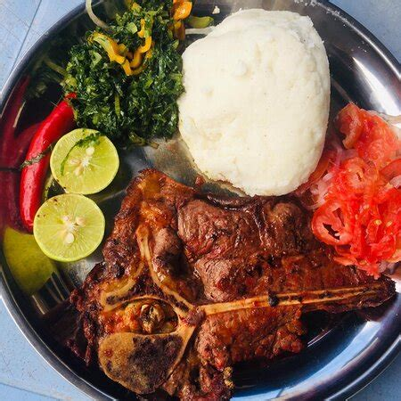

Home
Nyama Choma

Description
The name comprises of two words; nyama which means meat and choma which means barbecued in English. Put the two words together and you have barbecued meat. It is a popular dish in East Africa, especially in Kenya and Tanzania. Normally, beef, pork, mutton, or goat meat are used.
Ingredients
- Ginger
- Garlic
- Lemon
- Chilli
- Cumin
- Rosemary
- Onion
- Salt
- Paprika powder
- Goat leg or preferred cut of meat
Steps
- For the nyama choma marinade, blend all ingredients (except the meat) until smooth. If you lack a blender, dice everything finely or use a pestle and mortar. Marinating the meat is an extra step, but it's worth it as it enhances the flavors.
- On a chopping board, make 2-inch (5 cm) slits on the meat.
- In a large bowl, coat the meat with the marinade, ensuring the slits are covered. Save some marinade for basting during grilling.
- Cover the meat and allow it to marinate for at least two hours or overnight, for best results .
- Bring meat to room temperature. Preheat the grill to high; if using charcoal, adjust the heat using the ashes.
- Sear meat for 3 minutes per side to get char marks. Place on oiled foil and top with the reserved marinade. Add garlic and rosemary on top, then cover losely with foil.
- Set meat on a water-filled tray and grill under medium-low heat.
- As an optional step, near the end, mix honey and hot water and glaze the meat with it. Continue grilling until cooked through, and the juices run clear.
- Let the meat rest for 10-20 minutes and then serve.